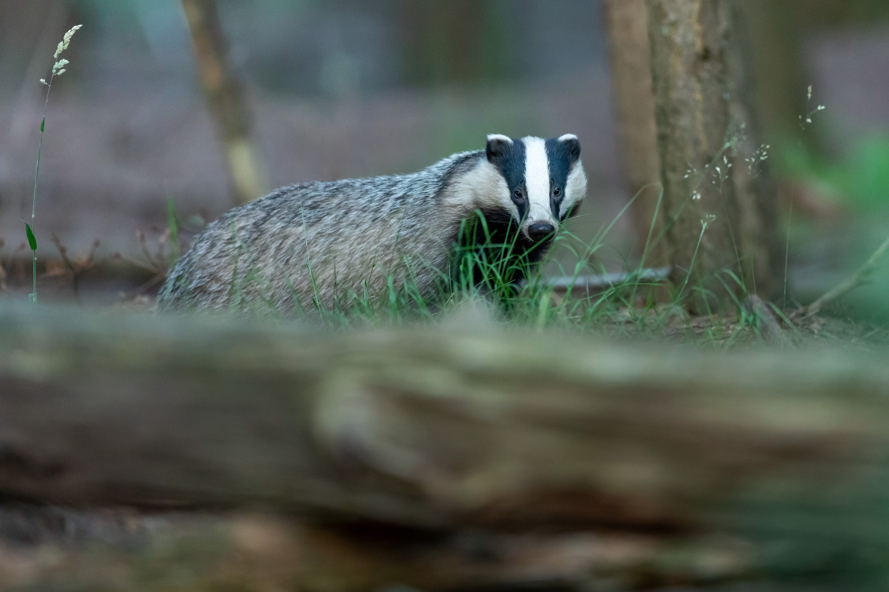

Hufflepuff
Hufflepuff is one of the four Houses of Hogwarts School of Witchcraft and Wizardry. Its founder was the medieval witch Helga Hufflepuff. Hufflepuff is the most inclusive among the four houses; valuing hard work, dedication, patience, loyalty, and fair play rather than a particular aptitude in its members. The emblematic animal is a badger, and yellow and black are its colours. The Head of Hufflepuff is Pomona Sprout and the Fat Friar is the House's patron ghost.
Hufflepuff corresponds roughly to the element of earth,[5] and it is for that reason that the House colours were chosen: yellow represented wheat, while black was emblematic of soil.[6] The Hufflepuff point hourglass contains yellow diamonds.[7] Students sorted into Hufflepuff often demonstrate exceptional abilities in Herbology, owing to their correspondence to earth.